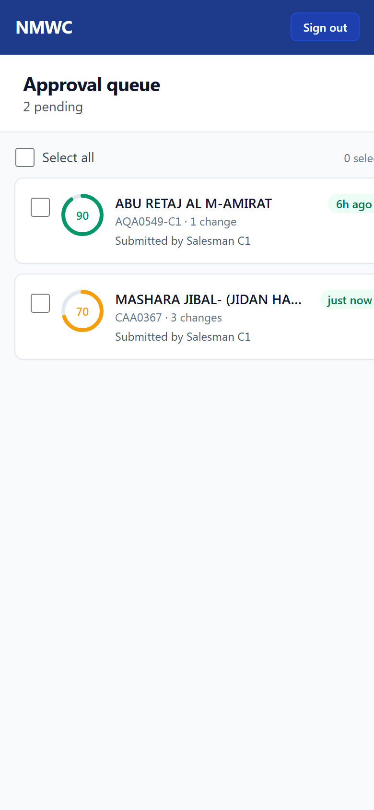
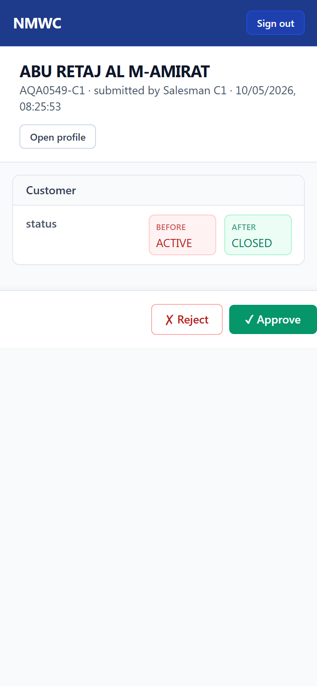

1. Logging in
- Open https://nmwc-cm.vercel.app on your phone or laptop.

- Sign in with your supervisor username and password.
- After signing in you land on the Approvals page automatically.
You are the gate between field-collected data and the master record. Every salesman submission lands in your queue. Your job is to approve good ones quickly, reject bad ones with a clear reason, and use bulk actions when a batch is uniformly good. This guide walks you through every screen.


When a batch is uniformly good (or uniformly bad).
| Category | Use it when… |
|---|---|
| Bad photo | Photo is blurry, taken from too far, or doesn't show what it should (e.g. CR photo where the writing is unreadable). |
| Wrong GPS | GPS coordinates point to the wrong place — e.g. salesman captured GPS at the office instead of the shop. |
| Missing field | A required field is empty or has a placeholder. |
| Wrong info | A field has data that doesn't match the photo or what we know about the shop. |
| Other | Anything else — type a clear reason. |
| Message you see | What it means |
|---|---|
| "Edit was just decided by another reviewer" | Another supervisor or manager approved/rejected before you. Refresh the queue. |
| "This value conflicts with an existing record" | Two salesmen submitted the same phone or CR number. Reject one and ask them to verify. |
| "Required fields are now missing" | Salesman deleted a required field (e.g. CR photo) between submitting and your approving. Reject — they need to re-upload at the shop. |
| "You are not authorized to act on this edit" | The customer is no longer in your team's scope (route reassigned, customer merged). Forward to your manager. |
| ✓ Approve | Apply the change to the master. |
| ✗ Reject | Send back to salesman with a category and reason. |
| Open profile | View the full customer record. |
| Approve N (sticky bar) | Bulk approve every selected edit. |
| Reject N (sticky bar) | Bulk reject every selected edit. |
| Green tag (under 24h) | Newest. Review when you can. |
| Amber tag (1-3 days) | Getting old. Aim to clear today. |
| Red tag (over 3 days) | Late — clear these first every morning. |
NMWC Customer Master · Supervisor Guide · v1.0 · 2026-05-10